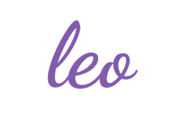
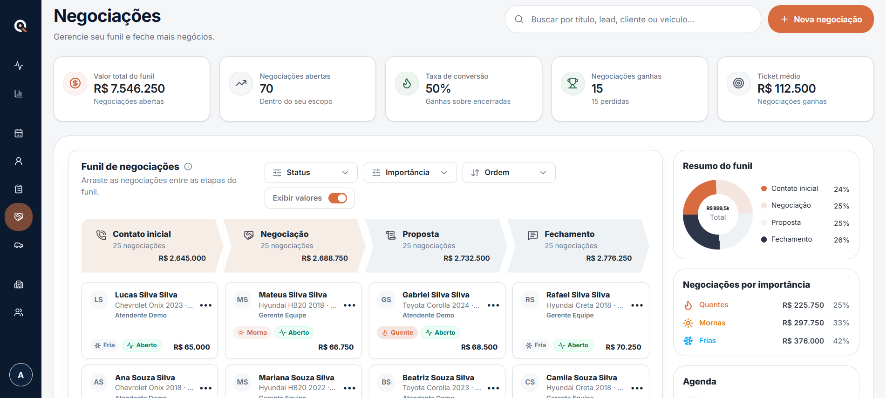
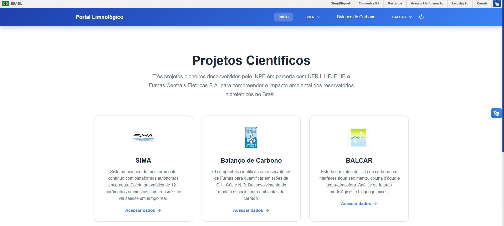
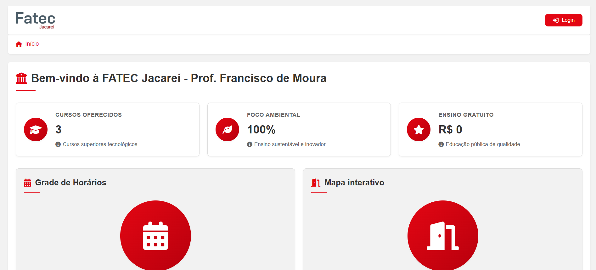
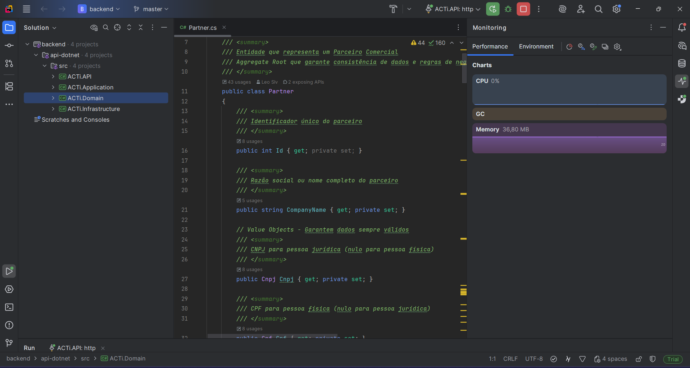
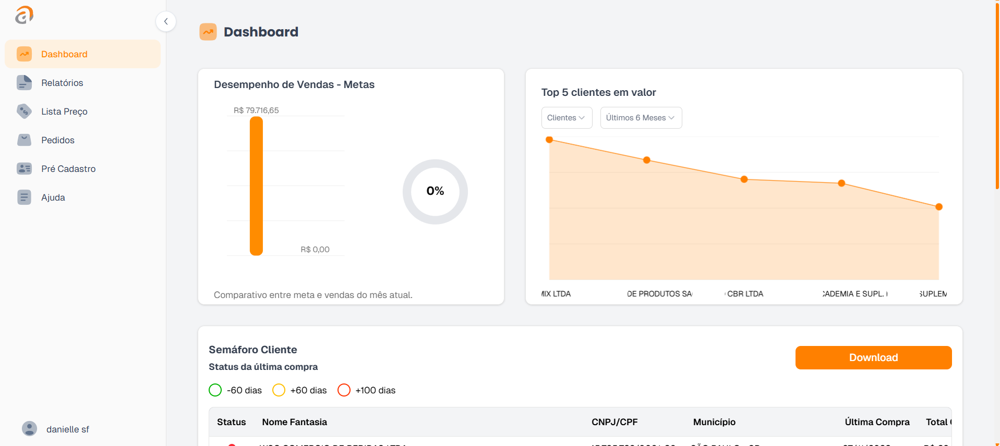
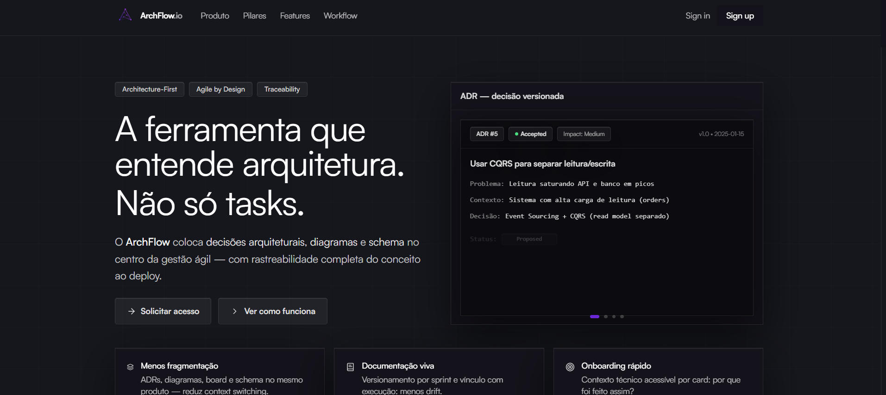
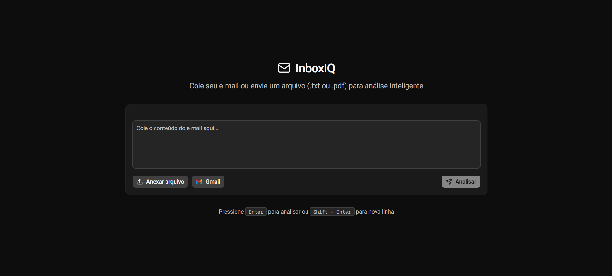
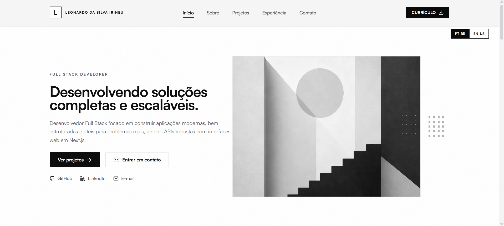

Perfil
Construo aplicações escaláveis e bem estruturadas, aplicando boas práticas como DDD, arquitetura em camadas e código limpo. Tenho experiência com ASP.NET, Next.js, NestJS, FastAPI, bancos relacionais e integração entre APIs e interfaces web.

Leonardo IrineuDesenvolvimento de Software Multiplataforma
Sou Leonardo da Silva Irineu, desenvolvedor full-stack em formação pela Fatec Jacareí, com foco em APIs robustas, interfaces web modernas, arquitetura em camadas e soluções digitais úteis para problemas reais.

Sobre mim
Construo aplicações escaláveis e bem estruturadas, aplicando boas práticas como DDD, arquitetura em camadas e código limpo. Tenho experiência com ASP.NET, Next.js, NestJS, FastAPI, bancos relacionais e integração entre APIs e interfaces web.
Evoluir como desenvolvedor full-stack, aprofundando arquitetura backend, qualidade de software, produtos SaaS e soluções orientadas a dados que ajudem equipes a trabalhar melhor.
Projetos

Sistema de gestão de leads para times de vendas, com foco em rastreabilidade de oportunidades e produtividade comercial.
Contribuição pessoal: atuei como Product Owner, arquiteto de software e desenvolvedor full-stack, conduzindo requisitos, documentação, arquitetura end-to-end e integração entre backend e frontend.
Tecnologias: Next.js, NestJS, PostgreSQL, TypeScript, DDD.
Ver repositório
Plataforma web para consulta e visualização de dados ambientais com filtros, tabelas, gráficos e relatórios.
Contribuição pessoal: participei do desenvolvimento full-stack, modelagem de telas, organização de dados e implementação de funcionalidades de consulta.
Tecnologias: React, JavaScript, PostgreSQL, visualização de dados.
Ver repositório
Solução full-stack para gestão acadêmica com área administrativa, consulta pública, autenticação e recursos de atualização.
Contribuição pessoal: colaborei na implementação de fluxos administrativos, integração com banco de dados e evolução das funcionalidades principais.
Tecnologias: React, Node.js, autenticação, banco de dados relacional.
Ver repositório
Aplicação full-stack para cadastro e gerenciamento de parceiros, com validações, arquitetura em camadas e persistência segura.
Contribuição pessoal: desenvolvi funcionalidades de backend e frontend, integrações com banco de dados e ajustes de regras de negócio.
Tecnologias: ASP.NET, SQL Server, Angular, Entity Framework Core.
Ver repositório
Sistema corporativo de ponto de venda web com dashboards, indicadores, relatórios e funcionalidades comerciais.
Contribuição pessoal: atuei na manutenção e evolução de funcionalidades com foco em performance, estabilidade e clareza de operação.
Tecnologias: Web, dashboards, relatórios, SQL Server.
Ver repositório
Plataforma para gestão ágil unificando Scrum e Kanban com foco em rastreabilidade, modularidade e escalabilidade.
Contribuição pessoal: desenhei a arquitetura em camadas, defini padrões de endpoints e implementei recursos backend e frontend.
Tecnologias: ASP.NET, Next.js, PostgreSQL, DDD.
Ver repositório
MVP de triagem inteligente de e-mails com classificação e respostas sugeridas usando IA.
Contribuição pessoal: desenvolvi a arquitetura da API, integração com IA, análise de texto/arquivos e interface de uso.
Tecnologias: FastAPI, OpenAI, Next.js, AWS.
Ver repositório
Portfólio desenvolvido para apresentar projetos, habilidades e trajetória profissional com interface responsiva.
Contribuição pessoal: planejei o conteúdo, construí a interface, organizei os projetos e adaptei a publicação para GitHub Pages em `/docs`.
Tecnologias: HTML5, CSS3, JavaScript.
Ver repositórioInformações complementares
2025 - 2027 | Em andamento
Mar. 2026 - atual
Set. 2025 - Mar. 2026
2023 - 2024 | Concluído
2017 - 2020 | Certificado
Contatos profissionais